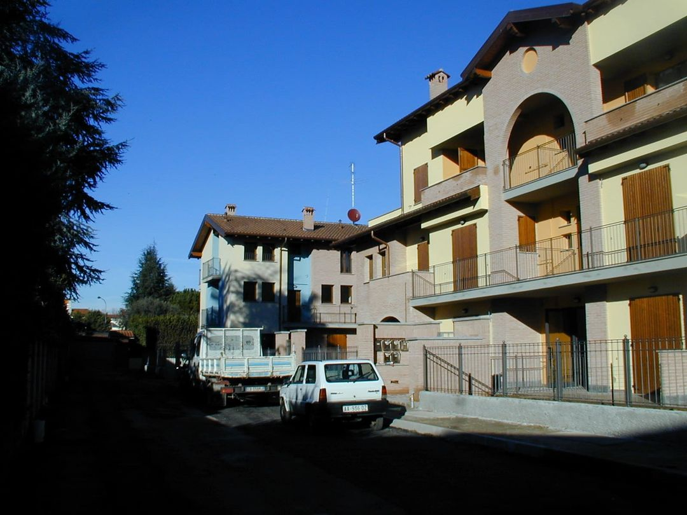

Brignano 2
Le immagini
Le foto: 5. Ogni immagine si apre a tutto schermo.
Le foto 5 immagini
Brignano 2
- Luogo
- Brignano Gera d'Adda (BG)
- Anno
- 2004
- Settore
- Residenziale
- Dimensione
- 15 appartamenti
- Stato
- Realizzato
Il progetto
Brignano Gera d'Adda Via Locatelli. Due palazzine residenziali costituite da 15 appartamenti e box interrati.
Brignano Gera d'Adda (BG)
Sulla mappa il punto azzurro è il centro del comune: la posizione è indicativa. I punti bianchi sono gli altri progetti Birolini nella zona.
Apri Brignano Gera d'Adda su OpenStreetMap (sito esterno)Altre case
Contatti
Birolini S.p.A., Via G. Marconi 123/C, 24020 Ranica (BG)